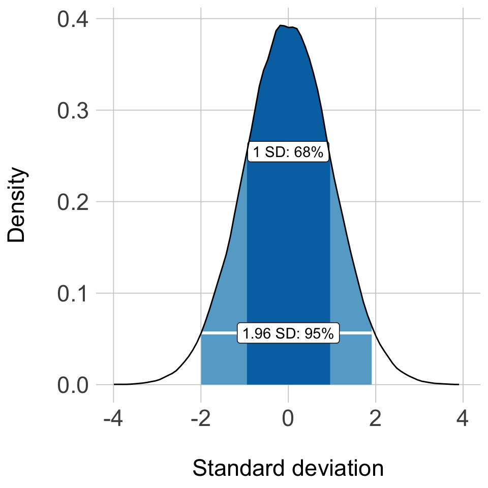
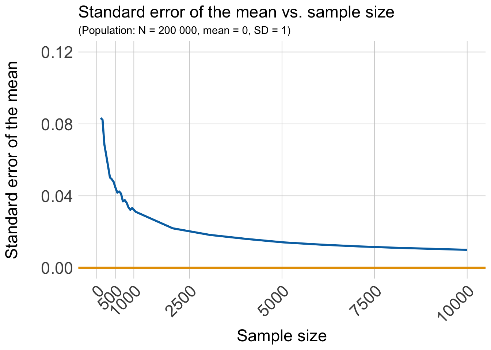

The gganimate package in action: Probability theory
Peter Kamerman
17 May 2016(I updated this post on 27 January 2019 to reflect the new gganimate API that Thomas Pedersen introduced)
Background
I have wanted to try David Robinson’s (and now also Thomas Pedersen) gganimate package since I came across it a few months ago. The package extends Hadley Wickham’s ggplot2 package by including the description of animation. It does this by providing a range of new grammar classes that can be added to the plot object in order to customise how it should change with time.
transition_*()defines how the data should be spread out and how it relates to itself across time.view_*()defines how the positional scales should change along the animation.shadow_*()defines how data from other points in time should be presented in the given point in time.enter_*()/exit_*()defines how new data should appear and how old data should disappear during the course of the animation.ease_aes()defines how different aesthetics should be eased during transitions.
Recently, the opportunity to put one of the package’s transition_*() functions to work while I was preparing materials for an introductory biostatistics tutorial for undergrad students. I wanted to demonstrate the central limit theorem and law of large numbers, and thought that animations would help deliver the message.
The central limit theorem provides a shortcut to knowing the sampling distribution, which is the probability distribution of a statistic (e.g., mean, proportion) for all possible samples from a population. The theorem is one of the cornerstones of probability theory because it allows you to make statements about the sampling distribution for a particular statistic without having to sample the entire population. As such, it forms the basis of statistical inference.
The central limit theorem states that the sampling distribution of an independent, random variable is normal or near-normal if a sufficiently large number of (equal-sized) samples are taken. If the sampling distribution for a statistic follows a normal or near-normal distribution we can make probability statements about the range of values in which the statistic lies. For example, there is a 68% probability that the sample statistic is within 1 standard deviation of the population value, and a 95% probability that it lies within about 2 standard deviations (see figure below). In the case of the sampling distribution, the standard deviation of the distribution is also called the standard error.
# Generate data for a standard normal distribution and 1/2 SD range
set.seed(2019)
density <- density(rnorm(100000), n = 100)
density <- tibble(x = density$x,
y = density$y)
density_sd <- density %>%
filter(x >= -1 & x <= 1)
density_sd2 <- density %>%
filter(x >= -2 & x <= 2)
# Plot
ggplot() +
aes(x = x,
y = y) +
geom_area(data = density_sd2,
fill = '#66AAD0') +
geom_area(data = density_sd,
fill = '#0072B2') +
geom_segment(aes(x = min(density_sd$x),
xend = max(density_sd$x),
y = density_sd[density_sd$x == min(density_sd$x), ]$y,
yend = density_sd[density_sd$x == min(density_sd$x), ]$y),
size = 1,
colour = '#FFFFFF') +
geom_segment(aes(x = min(density_sd2$x),
xend = max(density_sd2$x),
y = density_sd2[density_sd2$x == min(density_sd2$x), ]$y,
yend = density_sd2[density_sd2$x == min(density_sd2$x), ]$y),
size = 1,
colour = '#FFFFFF') +
geom_label(aes(x = 0,
y = density_sd[density_sd$x == min(density_sd$x), ]$y,
label = '1 SD: 68%')) +
geom_label(aes(x = 0,
y = density_sd2[density_sd2$x == min(density_sd2$x), ]$y,
label = '1.96 SD: 95%')) +
geom_line(data = density) +
scale_x_continuous(limits = c(-4, 4)) +
labs(x = '\nStandard deviation',
y = 'Density\n') +
theme(plot.title = element_text(size = 17),
axis.text = element_text(size = 17),
axis.title = element_text(size = 17),
axis.ticks = element_blank(),
panel.grid.major = element_line(colour = 'gray80',
size = 0.3),
panel.background = element_blank())
The size of the standard error also allows us to gauge the precision of the sample statistic, and this ‘width’ of the sampling distribution is dependent on the size of the samples. From a technical point of view, the standard error of the sample statistic is equal to the standard deviation of the population divided by the square root of the sample size (\(se = \frac{\sigma}{\sqrt{n}}\)). Basically, as the size of a sample increases the samples are more likely to be representative of the population, and therefore variability around the point estimate should decrease. The figure below shows the effect of increasing sample size on the precision of the standard error.
# Generate data of SEM as sample size from a std normal population increases
set.seed(2019)
population <- rnorm(n = 200000)
interval <- c(seq(from = 5, to = 1000, by = 50),
seq(from = 1050, to = 10000, by = 1000), 10000)
sem <- numeric(length(interval))
for(i in 1:length(interval)){
sem[[i]] <- sd(sample(x = population, size = interval[[i]]) / sqrt(interval[[i]]))
sem
}
sem_plot <- tibble(x = interval, y = sem)
# Plot
ggplot(sem_plot) +
aes(x = x,
y = y) +
geom_line(colour = '#0072B2',
size = 1) +
geom_hline(yintercept = 0,
colour = "#E69F00",
size = 1) +
scale_x_continuous(limits = c(0, 10000),
breaks = c(0, 500, 1000,
2500, 5000, 7500, 10000),
labels = c('0', '500', '1000',
'2500', '5000', '7500', '10000')) +
scale_y_continuous(limits = c(0, 0.12),
breaks = c(0, 0.04, 0.08, 0.12)) +
labs(title = 'Standard error of the mean vs. sample size',
subtitle = '(Population: N = 200 000, mean = 0, SD = 1)',
x = 'Sample size',
y = 'Standard error of the mean\n') +
theme(plot.title = element_text(size = 17),
axis.text.y = element_text(size = 17),
axis.text.x = element_text(size = 17, angle = 45, hjust = 1, vjust = 1),
axis.title = element_text(size = 17),
axis.ticks = element_blank(),
panel.grid.major = element_line(colour = 'gray80',
size = 0.3),
panel.background = element_blank())
This leads us to the law of large numbers. At a simplistic level, the central limit theorem tells us about the shape of the sampling distribution, while the law of large numbers tells us where the centre of the distribution lies. From the law of large numbers we can show that the cumulative result from a large number of trials/samples tends towards the true value in the population. That is, the probability of an unusual outcome becomes smaller as the number of trials/samples increases. This convergence in probability is also called the weak law of large numbers.
gganimate: the theories in action
I used the transition_reveal() function from the gganimate package to put the two theories into motion.
Our population
The central limit theorem holds across different distributions, and to illustrate this point I started with a population generated by taking a random sample (N = 200,000) from the exponential distribution (right-skewed) with rate 1.
The density distribution of this dataset is shown in the figure below (the mean is marked by the orange line), and it served as the population from which samples were taken to demonstrate the central limit theorem and the law of large numbers.
# Generate data using a random sample from the exponential distribution
set.seed(2019)
distr <- tibble(data = rexp(200000))
# Plot
ggplot(distr, aes(data)) +
geom_density(fill = '#0072B2',
colour = '#0072B2') +
geom_vline(xintercept = mean(distr$data),
colour = "#E69F00",
size = 1) +
scale_x_continuous(limits = c(0, 14),
breaks = c(0, 2, 4, 6, 8, 10, 12, 14)) +
scale_y_continuous(limits = c(0, 1),
breaks = c(0, 0.2, 0.4, 0.6, 0.8, 1)) +
labs(x = '\nValue', y = 'Probability\n') +
theme(plot.title = element_text(size = 17),
axis.text = element_text(size = 17),
axis.title = element_text(size = 17),
axis.ticks = element_blank(),
panel.grid.major = element_line(colour = 'gray80',
size = 0.3),
panel.background = element_blank())The central limit theorem in action
To demonstrate the central limit theorem, I took 5000 samples (without replacement) of n = 200 each from the ‘population’ of 200,000, and calculated the mean for each sample. I then tabulated the frequency at which sample means occurred across the 5000 samples, and used these data to plot a frequency histogram. However, in addition to the usual ggplot2 code, I added the function gganimate::transition_reveal(along = sample) to the final line of the plot code. Adding this additional function allows the gganimate::animate() function to take the ggplot2 object and to sequentially add the frequency bins of sample means as frames in an animation.
# Generate data
# Create an empty list, and a 'for loop' counter
lst <- list()
cnt <- 1:5000
# Take 5000 samples of n = 200 from 'population' and make a list of sample means.
set.seed(2019)
for(i in cnt){
lst[[i]] <- mean(sample(population, size = 200))
}
# Process data in 'lst' for plotting
## Unlist and round to reduce the number of bins for CLT plot
lst2 <- round(unlist(lst), 2)
## cross-tabulate the data to get frequency bins
tab <- xtabs(~lst2)
## Extract the names ('bins')
nam <- names(tab)
## Make data.frame for plotting
df <- tibble(sample = c(1:length(tab)),
mean = as.numeric(nam),
freq = as.numeric(tab))
# Plot the data
clt <- ggplot(data = df) +
aes(y = freq,
x = mean,
group = sample) +
geom_bar(stat = 'identity',
fill = '#0072B2',
colour = '#0072B2') +
geom_vline(xintercept = mean(population),
colour = "#E69F00",
size = 1) +
scale_x_continuous(limits = c(-0.3, 0.3),
breaks = c(-0.3, -0.2, -0.1, 0, 0.1, 0.2, 0.3)) +
scale_y_continuous(limits = c(0, 300),
breaks = c(0, 100, 200, 300)) +
labs(x = '\nSample mean',
y = 'Frequency\n') +
theme(plot.title = element_text(size = 20),
axis.text = element_text(size = 20),
axis.title = element_text(size = 20),
axis.ticks = element_blank(),
panel.grid.major = element_line(colour = 'gray80',
size = 0.3),
panel.background = element_blank()) +
transition_reveal(along = sample)
# Animate plots with animate
clt_animate <- animate(clt,
res = 150,
width = 7,
height = 7,
units = 'in')
# Save the output
anim_save(filename = 'central-limit.gif',
animation = clt_animate,
path = './images/posts/2016-05-17-probability-theory')The output is shown in the next figure, and as you can see, despite the samples being obtained from a right-skewed distribution, the distribution of sample means is roughly normal, and centred around the mean of the population (orange line).

The law of large numbers in action
To illustrate the law of large numbers, I took the 5000 sample means I had generated and calculated a cumulative mean across the samples. The cumulative mean was then plotted against the sample number in ggplot2 with the function gganimate::transition_reveal() animating the plot by sequentially adding the cumulative mean as the number of resamples increased.
# Process the data in 'lst2' for plotting
## Calculate the cumulative mean for plotting
cumm_df <- lst2 %>%
tibble(mean = .) %>%
mutate(cmean = round(cummean(mean), 4),
count = 1:length(mean)) %>%
select(count, mean, cmean)
## Create a reduced cumm_df dataset
index <- seq(from = 0,
to = nrow(cumm_df),
by = 50)
index[1] <- 1
cumm_short <- cumm_df %>%
filter(count %in% index)
# Plot the data
lln <- ggplot(cumm_short,
aes(y = cmean,
x = count)) +
geom_line(colour = '#0072B2',
size = 0.8) +
geom_hline(yintercept = mean(population),
colour = "#E69F00",
size = 1) +
labs(x = '\nSample number',
y = 'Cumulative mean\n') +
theme(plot.title = element_text(size = 20),
axis.text = element_text(size = 20),
axis.title = element_text(size = 20),
axis.ticks = element_blank(),
panel.grid.major = element_line(colour = 'gray80', size = 0.3),
panel.background = element_blank()) +
transition_reveal(along = count)
# Animate plots with gg_animate
lln_animate <- animate(lln,
res = 150,
width = 7,
height = 7,
units = 'in')
# Save the output
anim_save(filename = 'law-large-numbers.gif',
animation = lln_animate,
path = './images/posts/2016-05-17-probability-theory')The resulting figure is shown below, and shows the cumulative mean of sample means getting closer to the population mean as the number of samples increases.
So there you have it, the central limit theorem and the law of large numbers graphically illustrated using the awesome gganimate package in combination with ggplot2. Making the creation of animated ggplots simple.
Oops
The little I know about stats is dangerous, so if you spot an error please let me know by submitting an issue on GitHub or by adding a comment below.